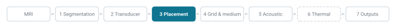

Heuristic Transducer Placement¶

When only a target is known, the transducer position still has to be chosen, and it decides how much skull lies in front of the transducer. placement.mode: 'heuristic' searches the skull surface for a transducer position whose geometric focus reaches an MNI target, keeps candidates whose exit plane intersects little skull and selects the one closest to the target. Besides the target and the focal depth (transducer.focal_distance_ep or focal_distance_bowl), which sets the search radius, no manual input is needed, which suits automatic end-to-end workflows.
On this page:
- Candidate Table: the metrics computed for every candidate position.
- Ear Exclusion Zones: optionally excluding candidates over the ears.
- Position Selection: the selection criteria and the coordinate output.
- Placement Figures: the overview and T1 overlay figures.
- Localite Planning Image: a header-adjusted T1 for Localite.
At a glance
- When you need it: When you have a target but no planned transducer position, e.g. for many subjects at once.
- Before you start: A SimNIBS segmentation, an MNI target, and the focal depth (
transducer.focal_distance_ep).
placement:
mode: 'heuristic'
heuristic:
mni_target_mm: [-29, -6, 7] # target in MNI mm
target_name: 'target' # used in output file names
The search converts the target to subject space with SimNIBS tools, finds candidate positions on the skull by expanding a sphere, scores each candidate (target distance, intersection with skin, mean and variance of the distances to skin and skull), optionally removes positions over the ears, and selects one position by the criteria below. Candidates and the selected position are written to the placement run folder, <path.placement>/sub-XXX/heuristic/<target_name>/; a copy of the selected position also goes to path.localite_export when set. All parameters: overview.
transducer_positioning runs the search; transducer_positioning_start calls it. Candidate positions come from an expanding sphere on the skull. For each candidate it computes the intersection proportion between the transducer and skin, mean and variance of the distances to skin and skull, and the geometric focus and exit plane positions. Each candidate's exit plane lies placement.skin_gap_mm (default 5 mm) off the scalp.
Candidate Table¶
tpars_sub-XXX_target.csv lists every candidate with the columns below. Use it to pick a candidate yourself, e.g. one with prop_intersect < 0.05 and minimal distance to the target, supported by visual inspection.
| Metric | Description | Interpretation |
|---|---|---|
idx |
index | |
trans_x |
Transducer x-coordinate (voxels) | |
trans_y |
Transducer y-coordinate (voxels) | |
trans_z |
Transducer z-coordinate (voxels) | |
targ_x |
Target x-coordinate (voxels) | |
targ_y |
Target y-coordinate (voxels) | |
targ_z |
Target z-coordinate (voxels) | |
dist_to_target |
Euclidean distance transducer-to-target (voxels) | |
prop_intersect |
Fraction of voxels in the transducer’s orthogonal plane that intersect with the skull mask. | Low values (≈ 0) indicate minimal skull obstruction; high values (> 0.3) indicate significant bone interference. |
mean_dist_skin |
Mean distance from non‑intersecting voxels to the skin boundary. | Average proximity of the plane to the skin surface. |
var_dist_skin |
Variance of distances from non‑intersecting voxels to the skin boundary. | Higher variance: surface curvature or oblique intersection. |
mean_dist_skull |
Mean distance from all voxels in the plane to the nearest skull boundary. | Average clearance between the plane and skull. |
var_dist_skull |
Variance of distances to the skull boundary. | Irregularity of skull spacing within the beam footprint. |
Ear Exclusion Zones¶
Optional. Transducer locations over the ears are not wanted. Candidates within placement.heuristic.ear_radius (radius of the no-go zone in voxels, default 35) around left_ear_center and right_ear_center (approximate ear coordinates, voxels) are removed when the centres are set.
Position Selection¶
The accepted intersection with the skull is set by placement.heuristic.criterion_intersection. If no candidate meets it, the criterion is expanded by expand_step (default: 1%) until one does, up to 0.3; if none qualifies then, placement stops with an error. The keys below sit under placement.heuristic; an empty value ([], the default) switches a criterion off.
Four further criteria, off by default, keep the candidates whose mean distance from the exit plane to skin or skull is short (criterion_skin_mean, criterion_skull_mean) or whose distance varies little across the exit plane (criterion_skin_var, criterion_skull_var), each as a quantile. See Heuristic placement parameters.
Among the candidates that meet the criteria, the one closest to the target is selected. To place another candidate instead, set placement.heuristic.candidate to its idx in the candidate table; the criteria are then not applied (an idx the table does not hold stops the run). The Nexus Heuristic sub-tab sets it: it plots and lists the candidates of the last run, and Place here places the one you click, reusing the candidate table rather than recomputing it. The output table gives its coordinates in voxel (grid space), mm (Localite space), and mm (RAS+ space), based on the image header of the segmentation image.
Warning
Localite mm coordinates assume that the Localite planning image has canonical_affine_transform applied (see Localite planning image). They are the 0-based voxel indices (MATLAB index − 1) rescaled by the voxel sizes in the header, with no affine transformation. Always verify coordinates visually.
Example coordinate output table
trans_x 161
trans_y 138
trans_z 246
targ_x 117
targ_y 139
targ_z 161
<...>
LOCALITE_Transducer_mm Inf
loc_trans_x_mm 144.9
loc_trans_y_mm 123.09
loc_trans_z_mm 221.02
LOCALITE_Target_mm Inf
loc_targ_x_mm 105.3
loc_targ_y_mm 124.88
loc_targ_z_mm 144.65
RAS_Transducer_mm Inf
ras_trans_x_mm 43.35
ras_trans_y_mm -16.17
ras_trans_z_mm 82.3
RAS_Target_mm Inf
ras_targ_x_mm 5.45
ras_targ_y_mm -20.71
ras_targ_z_mm 5.19
Placement Figures¶
PRESTUS generates an overview of the selected transducer placement:

If path.localite_export is set, a copy of the plot and the position table is also written to <path.localite_export>/sub-XXX/ (io.dir_localite_export).
A T1 overlay plot (plot_placement_t1_overlay) is generated after the position is selected. It shows the transducer position and target on orthogonal T1 slices and is written to the subject output folder next to the standard placement figure.
Localite Planning Image¶
Optional. Localite can struggle with images that contain affine matrices in the image header. With placement.heuristic.save_localite_t1: true, PRESTUS writes a header-adjusted T1 planning image for Localite, based on the T1.nii.gz in the SimNIBS m2m directory. path.localite_export must be set; the image is written as <path.localite_export>/sub-XXX/sub-XXX_T1_forneuronav.nii.